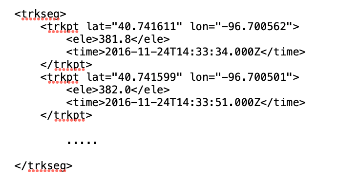
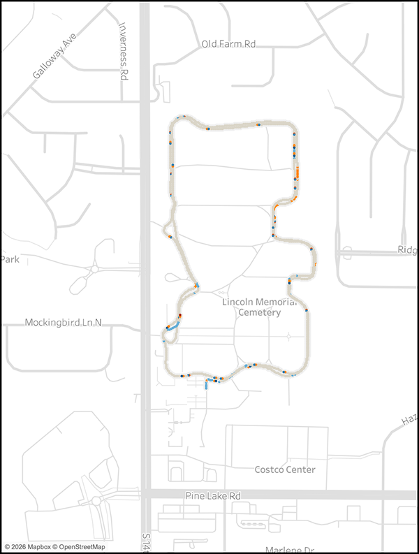
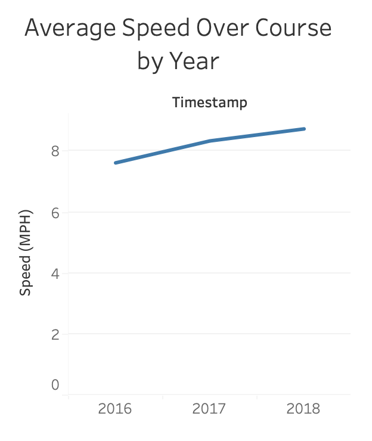
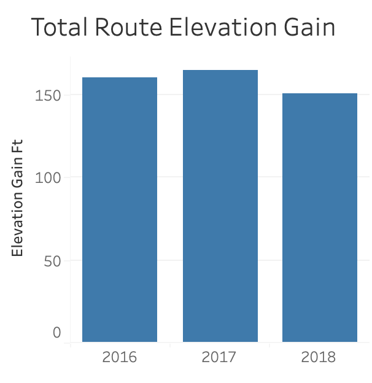
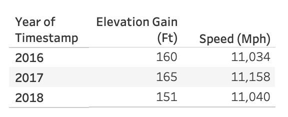

This repository demonstrates a method to share both static maps and data as well as Tableau Public dashboards.
Note this page only uses basic HTML, no CSS. A good tutorial for writing HTML can be found at https://www.w3schools.com/html/default.asp
A more advanced approach using JavaScript and the loading of dynamic data
from Google Sheets or CSV files will be added later as an additional page. The webpage is organized by section headings, please scroll down to find the various examples.
This data for this project started as three GPX files that were created from data recorded over three
Turkey Trot Runs in Lincoln, Nebraska 2016 - 2018. Each of the GPX files included a timestamp,
latitude, longitude and elevation value as recorded by the GPS device.

These three data files were loaded into ChatGPT and the elevation gained and the speed in MPH was calculated between the points. The data was then combined into one GEOJSON file and downloaded from ChatGPT.
The GeoJSON file was then loaded into Tableau Public for use in a Dashboard. Additionally, screenshots of bar, line and tables graphics were captured from Tableau to provide examples, however it should be noted that these graphics could just as easily been created using other data analysis tools such as R, Excel or MATLAB.



